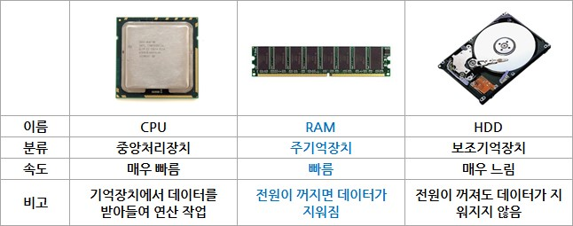
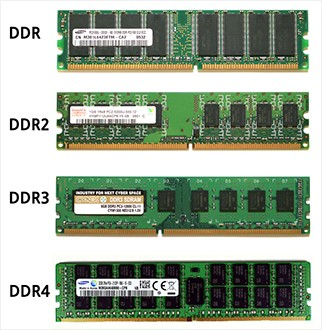
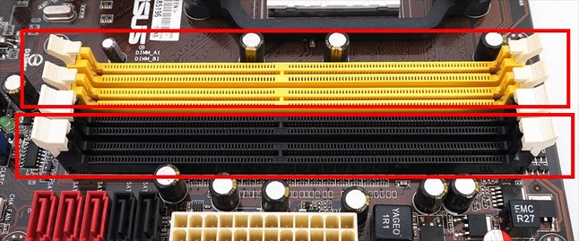

RAM
컴퓨터의 핵심 부품 중, CPU(중앙처리장치)는 연산 작업, 보조기억장치는 각종 데이터를 보관하는 작업을 수행한다.
보조기억장치로는 HDD(하드 디스크 드라이브), SSD(솔리드 스테이트 드라이브), CD, DVD, 플로피디스크 등 다양한 종류가 존재하지만
PC(Personal Computer)와 같은 일반적인 컴퓨터에서는 대개 HDD를 의미하는 경우가 많다.
따라서 컴퓨터에서 처리되는 대부분의 작업은 HDD에 있는 데이터를 토대로 CPU가 이를 연산 처리하여
출력장치(모니터 등)로 그 결과를 표시하는 방식으로 이루어진다.
때문에 이론적으로는 CPU와 HDD만을 가지고도 컴퓨터는 데이터 처리를 할 수 있다(물론, 실제로 이렇게 작동하는 컴퓨터는 없다).
다만, CPU에 비해 HDD는 동작속도가 너무나 느리다.
CPU의 재료인 반도체와 HDD의 재료인 자기디스크는 데이터 처리 속도 면에서 애당초 비교의 대상이 될 수 없기 때문이다.
CPU의 연산 속도가 아무리 빠르더라도 HDD에서 보내주는 데이터의 전송 속도가 워낙 느리면 고성능 CPU를 갖췄더라도 전반적인 성능이
휴대용 전자계산기 수준으로 떨어질 수도 있다.
참고로 HDD 대신 플래시 메모리 기반의 저장장치인 SSD를 쓰면 어느 정도 성능저하를 완화할 수 있으나,
이 역시 근본적인 해결책은 아니다. 이 역시 HDD보다는 빠르지만 CPU의 속도와 비교할 수 있는 수준은 아니기 때문이다.

때문에 CPU와 HDD 사이에 또 하나의 데이터 기억장치가 필요하다. CPU보다는 느릴지 몰라도 HDD보다는 훨씬 빠른, 그래서 양쪽 장치의 속도 차이로 인한 병목 현상을 줄여줄 수 있는 반도체 기반의 저장장치, 그것이 우리가 흔히 말하는 램(RAM: Random Access Memory)이다. 램은 데이터를 자유롭게 쓰거나 지울 수 있지만, 전원이 꺼지면 내용이 모두 지워지는 ‘휘발성 메모리’이기 때문에 HDD처럼 (반)영구적으로 데이터를 보관할 수는 없다. 하지만 CPU의 데이터 처리 속도와 보조를 맞출 수 있을 만큼 빠르다.
CPU와 HDD, 그리고 램 사이의 상관관계
일반적인 컴퓨터 작업의 과정을 살펴보면, 램은 HDD로부터 일정량의 데이터를 복사해 임시 저장한 후,
이를 필요 시마다 CPU에 빠르게 전달하는 역할을 한다. 이후부터는 속도가 느린 HDD는 배제하고
빠른 CPU와 램끼리만 데이터를 교환하므로 전반적인 작업을 고속으로 처리할 수 있다.
이러한 이유로, HDD가 단순히 데이터를 보관하는 역할에 그치는데 비해, 램은 컴퓨터 전반의 성능에 미치는 바가 크다고 할 수 있다.
이에 따라 램은 주기억장치, HDD는 보조기억장치로 분류된다.
일반적으로 컴퓨터 게임을 실행할 때 램과 HDD의 상관관계를 확인할 수 있다. 게임을 처음 실행할 때,
또는 각 스테이지를 넘어가는 도중에 화면이 정지하며 ‘로딩 중(Now Loading)’, 혹은 ‘기다려 주세요(please wait)’ 등의 메시지가
나오는 것을 본 적이 있을 것이다. 여기서 말하는 ‘로딩(적재)’이라는 것이 HDD에서 데이터를 읽어 램으로 전송하는 과정을 의미한다.
로딩이 끝나야 비로소 게임을 플레이할 수 있다.
램 증설로 PC 성능을 UP!
데스크톱이나 노트북 등의 개인용 컴퓨터, 즉 PC는 대부분 램의 업그레이드가 가능하게 설계되어있다.
PC용 램은 반도체 칩 여러 개를 직사각형의 기판 위에 부착한 모듈(module) 형태로 공급된다.
참고로, 데스크톱용과 노트북용 램 모듈은 크기가 다르니 구입시 주의해야 한다.
램 모듈은 PC 내부의 메인보드(mainboard 또는 motherboard: 주기판) 상에 위치한 메모리 슬롯에 장착한다.
슬롯의 수는 메인보드의 종류마다 다르지만, 노트북이나 보급형 데스크톱 메인보드의 경우 2개,
중급형 이상의 데스크톱 메인보드라면 4개가 제공되는 경우가 많다. PC 출고 시,
대부분 1개나 2개의 램 모듈이 장착되기 때문에 남은 슬롯에 추가로 램 모듈을 장착하여 업그레이드가 가능하다.
만약 남은 슬롯이 없다면 기존의 램 모듈을 빼낸 뒤에 업그레이드를 해야 한다.
그리고 메인보드의 종류에 따라 최대한으로 장착할 수 있는 램 용량이 정해져 있다. 이를테면 인텔 H81 계열 메인보드의 경우 최대 16GB까지, 인텔 Z97 계열의 메인보드는 최대 32GB까지 지원하는 경우가 많다. 따라서 램을 증설하고자 한다면 먼저 해당 PC 및 메인보드의 제조사에 관련 정보를 문의하는 것이 좋다. 다만, 메인보드가 고용량의 램을 지원하더라도 32비트 기반의 운영체제를 이용한다면 4GB 이상의 램을 모두 사용할 수 없다. 예를 들면 아직도 많은 사람들이 사용하는 PC용 운영체제인 마이크로소프트 윈도우 7 32비트 버전에선 4GB 이상의 램을 꽂더라도 3.5GB 혹은 3.25GB 등으로 실제 용량보다 적게 인식된다. 따라서 4GB 이상의 램을 완전히 사용하고 싶다면 64비트 버전의 운영체제를 설치해야 한다.
DDR3? DDR4?
램은 출시된 시기에 따라 성능이 차츰 향상되었다. 2000년 이후에 나온 PC라면 대부분 DDR-SDRAM(Double-Data-Rate Synchronous Dynamic Random Access Memory)
계열의 램을 사용한다. DDR-SDRAM은 이전에 사용하던 SDR-SDRAM(Single-Data-Rate Synchronous Dynamic Random Access Memory)에
비해 같은 클럭(clock: 동작속도)에서 2배의 성능을 낼 수 있는 것이 특징이다.
DDR-SDRAM 기술도 점차 발전을 거듭했다. 같은 클럭의 초기 DDR-SDRAM(이하 DDR1) 보다 2배의 성능을 내는 DDR2-SDRAM(이하 DDR2)이 2004년부터,
4배의 성능을 낼 수 있는 DDR3-SDRAM(이하 DDR3)은 2007년부터 출시되기 시작했으며, 2014년에는 8배의 성능을 내는 DDR4-SDRAM(이하 DDR4)이 등장했다.
2015년 현재, 컴퓨터 램 시장은 DDR3가 주류를 이루고 있으나, 향후 DDR4로 대체될 것으로 전망된다.
다만, DDR4가 가장 성능이 좋다 하여 구형 PC의 램을 업그레이드 할 때 무조건 DDR4를 사야 하는 것은 아니다. DDR1 ~ DDR4는 같은 DDR 계열의 제품이긴 하지만,
내부적인 기술에 차이가 있고, 모듈의 모양(슬롯 형태)도 다르기 때문에 사용할 수 있는 메인보드가 각각 정해져 있다.
다시 말해, DDR2 전용의 메인보드에 DDR3를, 혹은 DDR3 전용의 메인보드에 DDR4를 꽂을 수 없다.
예외적으로 두 종류의 램 슬롯을 동시에 갖춘 메인보드도 소수 존재하지만, 이런 경우에도
두 종류의 램을 혼용하는 것은 불가능하며, 둘 중 한가지만 선택해서 장착해야 한다.
이런 메인보드는 램 규격이 바뀌는 과도기에 종종 출시되는데, 처음에는 구형 규격의 램을 사용하다가 이후에 구형 램을 제거하고
신형 규격의 램으로 교체할 때 유용하다.
한편 같은 규격의 램이라도 용량이나 데이터 전송속도가 다를 수 있다. 이를테면 ‘DDR3 PC3-12800 4GB’라는 램이 있다면,
이는 4GB 용량의 DDR3 규격 램 중에서도 약 12,800MB/s의 최대 데이터 전송속도를 낼 수 있는 제품이다.
마찬가지로, ‘DDR3 PC3-10600 8GB’라는 램이면, 8GB 용량의 DDR3 규격의 램 모듈이며,
최대 데이터 전송속도는 약 10,600MB/s라는 의미다. 여러 개의 램 모듈을 하나의 메인보드에 함께 꽂을 경우,
용량이나 속도는 각각 다르더라도 규격(DDR1, DDR2, DDR3, DDR4 등)만 같다면 PC 작동에 별다른 문제는 없다.
다만, 그 중에서 가장 낮은 성능의 램에 전반적인 램 성능이 동기화 된다.
예를 들어 DDR3 PC3-12800 4GB 제품과 DDR3 PC-10600 8GB를 함께 꽂을 경우,
메인보드는 총 12GB의 PC3-10600 DDR3 규격 램이 장착된 것으로 인식한다.

램을 2개씩 꽂는 것을 추천하는 이유
아울러 최근 나오고 있는 대부분의 메모리 컨트롤러(memory controller: 램의 제어장치로, 메인보드나 CPU에 내장됨)는 2배수에 해당하는 램 모듈을 장착했을 때 대역폭(한 번에 옮길 수 있는 데이터의 양)을 2배로 높일 수 있는 ‘듀얼채널(Dual-channel)’ 기술을 제공한다. 쉽게 말해, 1개 또는 3개의 램 모듈을 장착했을 때 보다 2개 또는 4개의 램 모듈을 장착하면 보다 나은 성능을 기대할 수 있다는 것이다. 물론, 램을 듀얼채널로 장착했다 하여 갑자기 PC의 속도가 2배로 빨라지거나 하지는 않는다. 하지만 대용량의 프로그램을 사용하거나 동시에 여러 가지 작업을 동시에 할 때 상대적으로 유리하다.

듀얼채널은 한 쌍의 채널에 해당하는 2개의 슬롯에 램 모듈을 각각 꽂아 구성한다.
듀얼 채널 구성이 가능한 슬롯끼리는 색상으로 구분이 된다. 만약 2개의 램 모듈을 꽂더라도 각각 다른 색상의 슬롯에 장착할 경우,
PC의 작동 자체는 가능해도 듀얼채널의 기능은 발휘되지 않는다. 그리고 듀얼채널 구성 시,
한 쌍의 램 모듈은 되도록이면 제조사, 속도, 용량 등이 같은 것으로 하는 것이 좋다. 물론, 양쪽 램
모듈이 완전히 동일하지 않아도 정상적인 듀얼채널 구성이 되는 경우도 많지만, 아무래도 실패 확률이 높아진다.
끝으로, 일부 구형 메인보드나 CPU는 듀얼채널 기능을 아예 지원하지 않을 수 있으며, 서버나 워크스테이션과 같은 일부 고급 사양의 시스템은
3개나 6개의 램 모듈을 꽂을 경우 데이터 대역폭이 3배로 향상되는 ‘트리플채널(Triple-channel)’ 구성,
혹은 4개나 8개의 램 모듈을 꽂으면 데이터 대역폭이 4배로 향상되는 ‘쿼드채널(Quad- channel)’ 구성을 지원하는 경우도 있다.